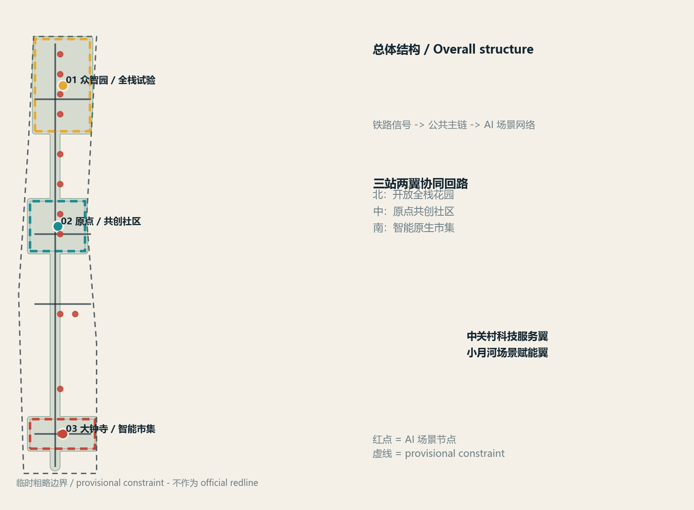
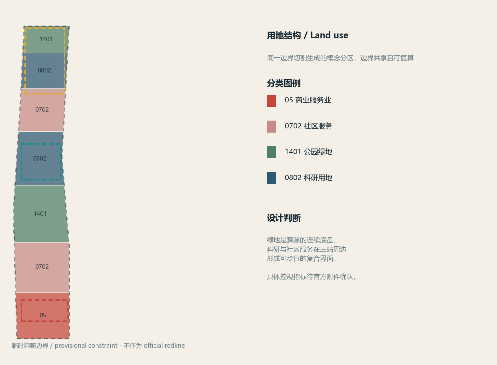
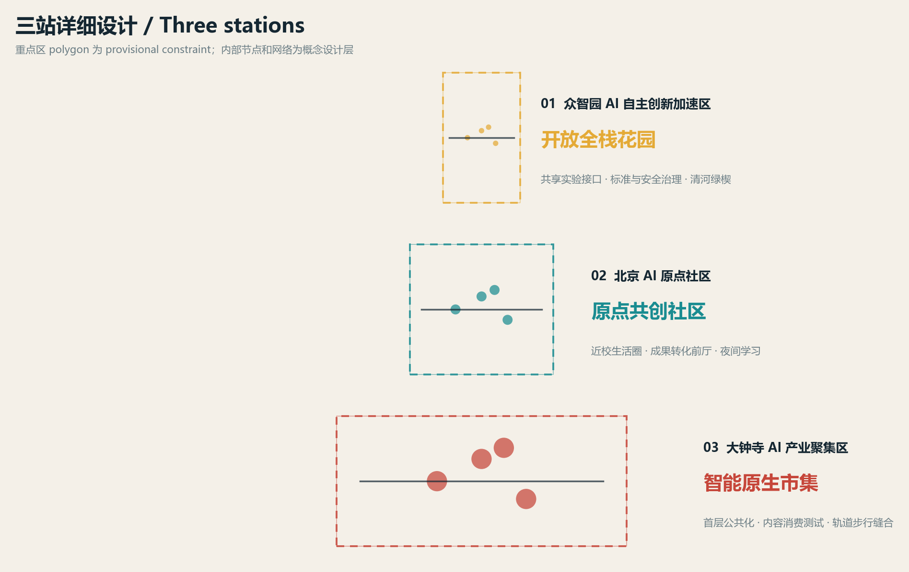
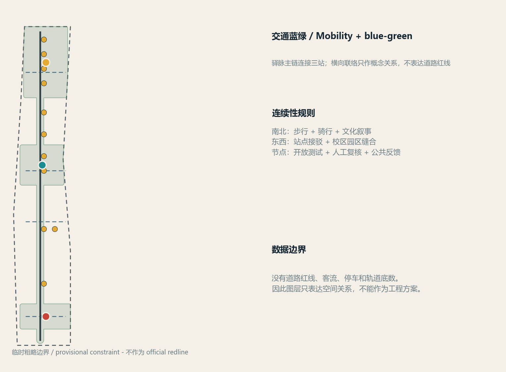
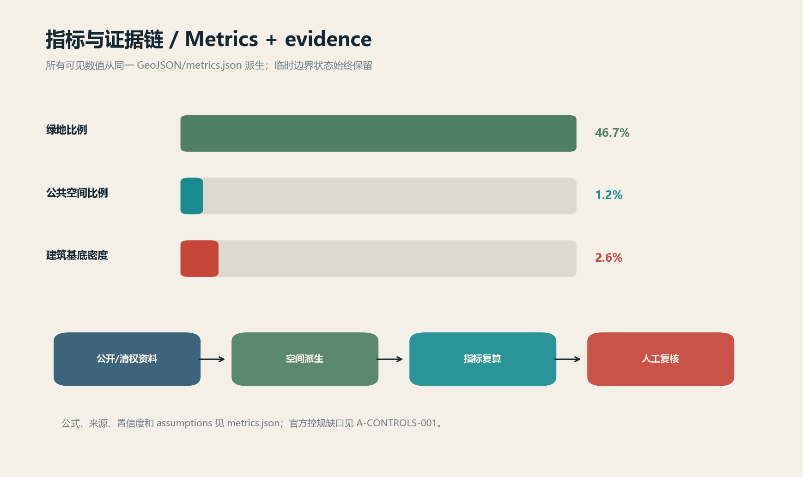

京张驿脉 / Jing-Zhang Signal Commons
以铁路信号、站点和联络为设计语法，把京张遗址公园转译为连接三处重点区、两翼服务和十二个 AI 场景的公共创新网络。
京张驿脉 / Jing-Zhang Signal Commons
设计依据与资料清单
本方案响应《百年京张AI创新带城市设计国际方案征集资格预审公告》，并将面向智能体任务书的共创原则转译为可读的空间策略、场景卡、运营机制和证据包。公告确认项目位于海淀，划分统筹研究范围、总体设计范围和重点区域范围，要求围绕 AI 产业生态、城市更新、交通市政、京张遗址公园活力带和城市风貌达到相应城市设计深度。[source:DATA-SRC-OFFICIAL-ANNOUNCEMENT-20260509] [standard:PROJECT-OFFICIAL-ANNOUNCEMENT]
方案同时遵循十条智能体共创原则：公共利益优先、公开资料边界、概念建议属性、AI 原生创新、结构化与可读并重、生成方法披露、人类最终判断、公共知识沉淀、贡献可记忆和人本治理。[source:DATA-SRC-AGENT-TASKBOOK-20260518] [standard:PROJECT-AGENT-OPEN-CALL-TASKBOOK]
资料登记采用仓库 data/source_registry.json 的分层逻辑：官方公告、智能体任务书、住建部城市设计管理办法、控规编制审批办法和自然资源部用地分类指南可作为 formal 依据；六处生态案例只用于机制比较；仓库维护者提供的临时 polygon 只用于生成、可视化、intake 自检和设计讨论。[source:DATA-SRC-MOHURD-URBAN-DESIGN-MEASURES] [source:DATA-SRC-MOHURD-CONTROL-DETAILED-PLANNING] [source:DATA-SRC-MNR-LAND-USE-CLASSIFICATION-202311] [source:DATA-SRC-PROVISIONAL-BOUNDARIES-20260605]
当前公开包没有可信的官方 SITE_BOUNDARY 和 KEY_AREA polygon，控规指标、现状建筑、权属、交通、市政和文保 GIS 也未提供。投稿包因此在 geometry/site_boundary.geojson 和 geometry/key_areas.geojson 中明确使用 geometry_role="provisional_constraint"、official_boundary=false、boundary_precision="provisional_rough"。[data:geometry/site_boundary.geojson#SITE-001] [data:geometry/key_areas.geojson#KEY-001] [data:geometry/key_areas.geojson#KEY-002] [data:geometry/key_areas.geojson#KEY-003] 这些边界不表达 official redline、审批依据或精确面积；官方资料到位后需统一替换并重算。[depth:existing_conditions_diagnosis] [depth:risk_missing_data]
视觉资产全部由本地 Python 脚本从同一组 GeoJSON、metrics 和矩阵派生，未使用外部图片、商标、人物、远程地图瓦片、外部字体或追踪脚本。生成方式、许可和责任写入 report/copyright_statement.md；所有空间落地、活动、政策和运营安排都是概念建议、参考方案或可供专业团队深化研究，不构成政府审定结论。

三层范围工作框架
**统筹研究范围（约 43.6 平方公里）**：北至北五环路，东至京藏高速，南至西直门外大街，西至万泉河路，负责产业战略、创新生态、区域协同和 AI 时代城市形态。公告面积与文字四至是 formal 任务依据，精确 polygon 仍待官方附件。[metric:announced_overall_design_area_sqm]
**总体设计范围（公告约 11.4 平方公里）**：以京张遗址公园周边 1-2 公里的城市地区和产业区为设计讨论范围。提交的临时 boundary 由公告面积约束和公开文字四至形成，计算值为 [metric:site_area_sqm]；它只支持本包的可视化和概念层空间复算。[data:geometry/site_boundary.geojson#SITE-001] [depth:three_level_scope_framework]
**重点区域范围（公告约 368.4 公顷）**：自北向南为众智园 AI 自主创新加速区、北京 AI 原点社区、大钟寺 AI 产业集聚区，提交的三个 provisional polygons 对应 [metric:zhongzhiyuan_area_sqm]、[metric:ai_origin_area_sqm]、[metric:dazhongsi_area_sqm] 和 [metric:key_area_count]。[data:geometry/key_areas.geojson#KEY-001] [data:geometry/key_areas.geojson#KEY-002] [data:geometry/key_areas.geojson#KEY-003]
三层范围形成“战略 - 总体 - 重点区”递进：统筹研究确定产业链和公共利益目标，总体设计将其落到用地、公共空间、交通、市政和更新分期，重点区用三个不同的空间实验验证产业、生活、文化和运营关系。[standard:PROJECT-OFFICIAL-ANNOUNCEMENT] [depth:overall_spatial_structure]

统筹研究范围产业与未来城市研究
总体概念、命名和视觉识别
主名称为 **京张驿脉**，英文为 **Jing-Zhang Signal Commons**。中文“驿脉”保留铁路站点、线路和公共交往的历史意象；英文 signal commons 强调信号不是监控，而是公开、可解释、可被人共同使用的城市接口。Logo 方向为三条等距轨道线在一枚“信号灯”节点处汇合：红色圆点代表贡献与荣誉，青色短线代表公共网络，黄色短线代表试验许可。图形由自制几何线条构成，不使用任何外部字体、企业商标或历史人物肖像。[source:DATA-SRC-AGENT-TASKBOOK-20260518]
三大定位被转译为：**百年京张文化带**（历史资源和公共叙事主链）、**都市 AI 生活体验带**（居民、人才和访客的日常服务界面）、**AI 融合创新带**（科研、企业、场景和治理的开放试验网络）。五大功能对应：AI 全栈自主创新体系、世界级 AI 创新生态、AI+ 场景赋能新范式、智能化 AI 活力城市、AI 治理全球话语权。[standard:PROJECT-AGENT-OPEN-CALL-TASKBOOK]
三区两翼协同回路
三个重点区像三座“站”：北部众智园承担全栈研发、标准、安全和治理试验；中部 AI 原点社区承担高校策源、开源协作、人才生活和成果转化；南部大钟寺承担智能体、智能终端、内容消费和国际交往。中关村科技服务翼把资本、法务、知识产权、算力和全球合作服务送入三站；小月河场景赋能翼把教育、医疗、法律、社区服务和绿色空间测试带入日常生活。空间上用驿脉主链和东西联络线连接，运营上用同一套数据最小化、人工复核和公共反馈协议闭环。[data:geometry/roads.geojson#ROAD-001] [data:geometry/public_space.geojson#NODE-04] [data:geometry/green_space.geojson#GREEN-001]
六处公开生态案例的机制转译
以下案例只做公开机制阅读，不复制企业名单、投资额、产值或治理效果；本地设计仍以公告和 formal 标准为主。[source:CASE-MARS] [source:CASE-MARIA01] [source:CASE-STATIONF] [source:CASE-22AT] [source:CASE-KINGS-CROSS] [source:CASE-ONE-NORTH]
| 案例 | 可观察机制 | 转译为京张驿脉的概念建议 | | --- | --- | --- | | MaRS Discovery District | 研究、创业和公共议题在同一创新社区相遇 | AI 原点社区设置成果转化前厅和公共议题工作坊 | | Maria 01 Helsinki | 共享工作、社群活动和创业支持叠加 | 原点站以可预约的开源客厅、夜校和贡献记录支撑低门槛协作 | | Station F Paris | 大体量创业社区将办公、服务和活动组织为持续网络 | 众智园把算力入口、标准咨询、测试场和国际活动组合成开放全栈花园 | | 22@Barcelona | 产业更新与街区公共空间同步推进 | 以驿脉主链统筹产业服务首层、绿地和校区园区缝合，不预设法定强度 | | King’s Cross | 铁路遗产、公共空间和长期运营共同形成地区识别度 | 京张遗址公园以文化叙事、慢行主链和公共节点形成“记忆可走、贡献可见”的路线 | | one-north Singapore | 科研、企业、生活和公共空间混合组织 | 三站两翼形成工作-生活-学习-社交的一体化服务，而不是单一园区 |
AI 原生城市形态
未来城市不是把传统设施贴上 AI 标签，而是把“公开数据 - 沙盒测试 - 人工复核 - 公共反馈”写进空间和运营。公共空间节点提供可见的服务说明和退出机制；场景只使用公开、清权或经同意的匿名数据；任何影响个人权益的结果都必须由人复核。端侧算力、绿色能源、数据沙盒和智能交通均作为待专业团队深化的设施接口，不写成已批准的市政容量或工程可行性。[standard:MOHURD-URBAN-DESIGN-MEASURES] [depth:municipal_new_infrastructure]
创新指数、人才密度、产业空间和活动参与度可作为后续运营指标，但本包只把能从几何和公开公告复算的指标列为 known；官方控规控制和现状底数缺失的指标保持 unknown。[metric:building_density] [metric:floor_area_ratio] [metric:building_height_m]
总体设计范围城市更新与控规深度城市设计
空间骨架与用地
提交的 geometry/land_use.geojson 由同一 provisional site polygon 通过共享水平切线分割，覆盖边界且无重叠。[data:geometry/land_use.geojson#LU-001] 用地代码采用自然资源部分类指南中的 05、0702、0802 和 1401，形成南部智能市集 - 中部社区服务 - 中部公园绿地 - 北部科研测试的连续界面。[standard:MNR-LAND-USE-CLASSIFICATION-GUIDE] [depth:land_use_layout]
建筑与更新方式
geometry/buildings.geojson 是概念性体量和更新动作参考：保留（existing_retained）、适应性更新（adaptive_reuse）和新建参考（new_build_reference）三类均不代表真实建筑属性或已确定拆改结论。[data:geometry/buildings.geojson#BLDG-001] 建筑基底面积和密度分别为 [metric:building_footprint_area_sqm] 与 [metric:building_density]；FAR、正式高度、退线和建筑控制线没有公开值，保持 [metric:floor_area_ratio]、[metric:building_height_m] 和 unknown 状态。[standard:MOHURD-CONTROL-DETAILED-PLANNING] [depth:development_intensity_controls] [depth:height_massing_character] [depth:retain_renovate_demolish]
建筑风貌建议以“铁路构架 + 当代低碳界面 + 可变首层”为语言：公共主链一侧优先透明、可进入、可阅读的首层；科研和测试空间保留安全边界与可预约入口；居住和社区服务强调安静、遮阴、无障碍。最终体量、高度、色彩、屋顶和视线控制需结合 official controls、文保线和现状建筑调查深化，不把本包的概念 footprint 作为审批图。
重点区域详细设计

01 众智园 AI 自主创新加速区：开放全栈花园
空间定位是“研发 - 标准 - 安全 - 绿色交往”的花园型 AI 街区。概念性提出三层界面：一层为可预约的共享实验接口和产业展示；二层为研发、标准与安全治理工作单元；外部为清河文化绿楔和驿脉主链。节点 [data:geometry/key_areas.geojson#KEY-001] 的 provisional polygon 只表达讨论范围，不能推导真实地块或建筑规模。[metric:zhongzhiyuan_area_sqm] [depth:three_key_area_detailed_design]
AI 测试场景包括开放算力预约、数据沙盒门廊、安全审计诊所和绿色空间数字孪生演示。每个场景都要求最小数据、授权访问、人工复核和公开反馈；标准制定、模型安全和产业展示只作为可供专业团队深化的运营机制，不宣称已获得国家平台、企业或资金承诺。
02 北京 AI 原点社区：原点共创社区
空间定位是“近校策源 - 开源协作 - 人才生活”的低扰动创新社区。建议在校区、园区和社区之间设置成果转化前厅、开源发布厅、开发者夜校、社区多语导览和人才服务节点；保留、适应性更新和公共化首层的判断需等现状建筑、权属和校园边界资料确认。[data:geometry/key_areas.geojson#KEY-002] [metric:ai_origin_area_sqm]
原点社区把“工作 - 生活 - 社交 - 学习”压缩到可步行的日常半径。空间设计优先可达、可停留和可退出，AI 服务不以居民持续被识别为前提；成果展示和品牌活动均为开放共创建议，须有版权、活动安全和公共参与方案。[depth:three_key_area_detailed_design]
03 大钟寺 AI 产业聚集区：智能原生市集
空间定位是“智能体 - 终端 - 内容消费 - 国际交往”的城市型产业街区。建议围绕轨道站点四象限和重点企业周边公共空间，组织首层公共化、可变展陈、国际路演客厅、智能终端体验和非机动车友好界面；道路、站点和地块具体关系只能待交通底数和 official controls 后深化。[data:geometry/key_areas.geojson#KEY-003] [metric:dazhongsi_area_sqm]
大钟寺的智能原生新业态不是沉浸式广告或过度娱乐化地标，而是让产品测试、商务交往、居民消费和公共反馈共处于可审计的小尺度空间。数据要素和数字资产流通只作为合规研究议题，不能写成已批准交易平台或企业名单。[depth:three_key_area_detailed_design]
AI 创新生态、人才画像与 AI+ 场景
六类用户画像
1. **全球创业者**：需要低门槛试验、跨语种服务、公开活动和可信的城市生活入口。 2. **研发与工程人才**：需要安静的研发空间、算力预约、夜间学习、运动和绿色休息。 3. **校企转化团队**：需要成果展示、知识产权、法务、测试和小规模路演的组合空间。 4. **周边居民与家庭**：需要安全通勤、社区服务、儿童友好、无障碍和不被过度采集的日常公共空间。 5. **国际访客与开发者**：需要可理解的铁路文化叙事、开放导视、短时协作和国际活动路线。 6. **公共服务与治理人员**：需要可解释的测试环境、人工复核工作台、公众反馈和风险留痕。[metric:persona_count]
十二张 AI 场景卡
下表是概念性 scenario cards；“测试”表示产业测试验证建议，不表示已经批准运营。每张卡都以公开/清权资料、最小化匿名数据和人工复核为前置条件。[source:DATA-SRC-AGENT-TASKBOOK-20260518] [metric:ai_scenario_count] [metric:industry_test_scenario_count]
| 编号 | 场景卡 | 空间位置 | 测试/服务 | 数据与人工边界 | | --- | --- | --- | --- | --- | | 01 | 开放算力预约 | 众智园开放全栈花园 | 测试 | 只处理经授权的预约与资源状态，异常由人工确认 | | 02 | 数据沙盒门廊 | 众智园标准治理界面 | 测试 | 数据集分级、脱敏、留痕，不导入个人原始数据 | | 03 | AI 安全审计诊所 | 众智园测试廊道 | 测试 | 模型评测结果由专业人员复核后公开摘要 | | 04 | 绿色空间数字孪生演示 | 清河/小月河绿楔 | 测试 | 仅用公开环境数据，不作为工程负荷结论 | | 05 | 开源发布厅 | 原点社区 | 服务 | 贡献者自愿署名，内容版权和撤回路径清晰 | | 06 | 开发者夜校 | 原点社区 | 服务 | 报名、签到和反馈数据只做匿名聚合 | | 07 | 近校成果转化街 | 原点社区 | 服务 | 知识产权、法务和成果信息由权利人授权 | | 08 | 社区多语导览 | 驿脉公共主链 | 服务 | 访客主动选择语言，不建立个体轨迹档案 | | 09 | AI 慢行导航 | 公园和站点接驳线 | 服务 | 只提示无障碍和拥挤风险，人工维护导视 | | 10 | AI+医疗服务导航 | 小月河场景赋能翼 | 测试 | 只做机构/服务检索，不作诊断或个体推荐 | | 11 | AI+教育实验室 | 原点社区近校界面 | 测试 | 未成年人需监护同意，教师保留最终判断 | | 12 | 智能原生市集 | 大钟寺产业街区 | 服务 | 体验反馈可撤回，不把消费者画像用于强制营销 |
场景空间和运行层分别落在 [data:geometry/public_space.geojson#NODE-01]、[data:geometry/public_space.geojson#NODE-04]、[data:geometry/roads.geojson#ROAD-001]、[data:geometry/green_space.geojson#GREEN-001] 和 [data:geometry/phasing.geojson#PHASE-1]；测试场景只进入沙盒、公开说明、人工复核和阶段性评估流程。[depth:overall_spatial_structure] [depth:municipal_new_infrastructure]
用地、建筑规模与拆改留方案
土地分类采用 05 商业服务业、0702 社区服务、0802 科研用地和 1401 公园绿地，完整覆盖 provisional site polygon；各代码的面积见 metrics.json 的 land_use_area_by_code_sqm。[data:geometry/land_use.geojson#LU-001] [standard:MNR-LAND-USE-CLASSIFICATION-GUIDE] [depth:land_use_layout]
建筑 footprint 仅用于表达城市设计的体量关系和更新动作类型，不能替代现状建筑调查。建议专业团队后续按“保留 - 适应性更新 - 新建参考 - 待确认”建立逐栋清单，并把产权、文保、消防、日照和市政条件作为前置核验。提交层的 [metric:building_footprint_area_sqm]、[metric:building_density] 只反映本次概念 footprint；FAR 和高度保持 [metric:floor_area_ratio]、[metric:building_height_m] unknown。[depth:development_intensity_controls] [depth:retain_renovate_demolish] [depth:height_massing_character]
交通、轨道、市政与公共服务设施
geometry/roads.geojson 用五类概念线表达驿脉主链、南北连续、东西缝合和三站接驳：[data:geometry/roads.geojson#ROAD-001]。它们不是道路红线或轨道线位。建议的交通优先级为：步行和骑行连续性、轨道站点接驳、无障碍和非机动车停放、地块出入微循环，再由专业交通团队用客流、断面、停车和安全资料复核。[metric:road_length_m] [metric:greenway_length_m] [depth:traffic_rail_slow_parking]
新型基础设施采用“接口先行”概念：端侧算力、数据沙盒、分布式能源和传统市政服务在节点处以可替换模块接入，任何能源负荷、管线容量、防洪排涝、消防通道和地下工程结论均待官方或清权资料确认。[data:geometry/constraints.geojson#CONSTRAINT-001] [depth:municipal_new_infrastructure]
公共服务按工作、生活、社交、学习四类需求布置：社区服务节点提供教育、医疗、法律和生活服务导航；产业节点提供算力、法务、知识产权和路演；公园节点提供运动、文化导览和休息。所有服务优先采用公开可核验信息，保留人工窗口和线下替代路径。

蓝绿空间、公共空间与城市风貌
京张遗址公园是公共主链，不是只供观看的纪念性背景。geometry/green_space.geojson 以驿脉主链和三站绿楔形成蓝绿底盘，[metric:green_space_area_sqm] 与 [metric:green_ratio] 说明其可复算面积；geometry/public_space.geojson 以十二个开放节点承载场景、休息和公共反馈，[metric:public_space_area_sqm] 与 [metric:public_space_ratio] 说明节点网络的空间份额。[data:geometry/green_space.geojson#GREEN-001] [data:geometry/public_space.geojson#NODE-01] [standard:MOHURD-URBAN-DESIGN-MEASURES] [depth:blue_green_public_space]
文化叙事采用三层时间轴：京张铁路讲“工程、连接和公共记忆”；中关村文化讲“开放、试错和知识共享”；AI 新文化讲“可解释、可复核和共同贡献”。导视以站点编号、线路色带和短句构成，不使用未经授权的历史照片、字体、企业标识或人物肖像。三处概念性 AI 朝圣地标如下：[metric:ai_landmark_count] [depth:overall_spatial_structure]
1. **京张信号塔**：众智园北段的贡献与荣誉展示节点，记录公开贡献、标准讨论和年度安全议题；材料以可逆、低扰动和无障碍为前提。 2. **原点开源门**：AI 原点社区的年度发布与公共接口节点，连接高校策源、开发者社区和成果转化前厅。 3. **驿脉观景台**：南北叙事和跨环路公共体验节点，把铁路记忆、蓝绿空间和国际传播路线连在一起。
三个地标都是概念建议、参考方案或可供专业团队深化研究的空间组件，不构成获批建设或文保结论。地标周边的荣誉展示采用贡献者自愿署名、版权清权、可撤回和公开审计机制，避免过度娱乐化或网红化。
更新项目清单、实施政策与分期计划
项目清单分为“先让公共主链可走 - 再让三站可试 - 最后让网络可持续”三期。geometry/phasing.geojson 用三个共享边界的概念分期 polygon 表达实施逻辑，[metric:phasing_area_sqm] 为分期覆盖面积。[data:geometry/phasing.geojson#PHASE-1] [data:geometry/phasing.geojson#PHASE-2] [data:geometry/phasing.geojson#PHASE-3] [depth:renewal_project_list] [depth:phasing_implementation]
| 编号 | 概念项目 | 优先阶段 | 依赖与核验 | 公共价值 | | --- | --- | --- | --- | --- | | JZ-01 | 驿脉主链慢行断点缝合 | 近期 | 道路红线、无障碍和安全复核 | 先提升可达与公共体验 | | JZ-02 | 众智园开放全栈花园试验廊道 | 中期 | 产业空间、算力、数据授权和安全团队 | 把测试机制变成可见公共知识 | | JZ-03 | 原点社区开源发布厅与夜校 | 近期 | 校区边界、场地权属、活动安全和版权 | 连接高校、开发者和居民 | | JZ-04 | 大钟寺智能原生市集 | 中期 | 站点交通、企业协商、首层权属和消防 | 让智能原生新业态进入日常街区 | | JZ-05 | 绿楔与小月河场景赋能翼 | 近期-中期 | 河道蓝线、生态、防洪和维护机制 | 将 AI+教育/医疗/生活服务放到公共空间 | | JZ-06 | 全球 AI 活动周与贡献记忆系统 | 长期 | 公共空间许可、国际合作、运营主体 | 沉淀长期品牌资产和开发者网络 |
实施政策建议包括：建立跨片区公共主链统筹机制；用开放协议和可撤回授权管理场景；用小尺度、可逆、低扰动更新测试公共空间；把公众参与、开发者贡献和人工复核结果写入年度评估；建立 official polygon、控规、交通、市政、文保和权属资料的版本化更新流程。以上均为概念建议，不能替代法定审批、投资测算、土地出让或政府活动安排。
年度运营采用“春季开源发布 - 夏季场景测试 - 秋季全球 AI 活动周 - 冬季公共复盘”节奏；开发者社区以贡献者自愿登记、公开议题、线下夜校、可审计测试结果和年度荣誉展示为骨架；场景开放运营以预约、沙盒、人工复核、公众反馈和退出机制为最小单元。国际传播不承诺招引效果，转化路径只描述可能的合作接口：高校成果 -> 开源社区 -> 产业测试 -> 企业服务 -> 公共应用 -> 专业团队深化。[source:DATA-SRC-AGENT-TASKBOOK-20260518]
指标体系、面积复算与合规矩阵
指标分为三类。第一类是从本包几何直接复算的空间指标：总体边界、用地、建筑、道路、绿地、公共空间和分期；第二类是公告或标准中的已知面积与任务要求；第三类是需要正式控规、现状调查或运营数据的 unknown/pending 指标。所有 known 指标都在 metrics.json 有 status、value、unit、source_files、formula、confidence 和 assumptions，并在本节显式回引。
| 指标 | 设计含义 | 证据 | | --- | --- | --- | | 总体临时面积 | provisional 设计讨论基准 | [metric:site_area_sqm] / [metric:announced_overall_design_area_sqm] | | 建筑 footprint 与密度 | 仅表达概念体量供给，不是现状或控规结论 | [metric:building_footprint_area_sqm] / [metric:building_density] | | 绿地面积与比例 | 驿脉主链连续性和人才生活质量的空间底盘 | [metric:green_space_area_sqm] / [metric:green_ratio] | | 公共空间面积与比例 | AI 场景、交往、休息和公共反馈的承载份额 | [metric:public_space_area_sqm] / [metric:public_space_ratio] | | 道路与绿道长度 | 慢行连续和站点接驳的概念关系 | [metric:road_length_m] / [metric:greenway_length_m] | | 三处重点区面积与数量 | 三站差异化设计和三区两翼闭环 | [metric:zhongzhiyuan_area_sqm] / [metric:ai_origin_area_sqm] / [metric:dazhongsi_area_sqm] / [metric:key_area_count] | | 分期覆盖面积 | 近期公共主链、中期三站试验、长期网络运营的范围检查 | [metric:phasing_area_sqm] | | 场景、测试、画像、地标数量 | agent.3-agent.6 的可读任务覆盖 | [metric:ai_scenario_count] / [metric:industry_test_scenario_count] / [metric:persona_count] / [metric:ai_landmark_count] |
面积计算采用 EPSG:4548，GeoJSON 交换坐标采用 EPSG:4326；provisional 边界的计算值不是官方红线精度。compliance_matrix.json 覆盖公告 1.3、1.4、1.5 和 agent.1-agent.6；standard_matrix.json 逐条连接标准、章节、图层、指标、图纸和假设；design_depth_matrix.json 的核心项全部为 complete，但每项同时保留待补资料和 self-check 证据。[depth:metrics_recalculation] [depth:three_level_scope_framework]
自检矩阵明确覆盖：[depth:existing_conditions_diagnosis]、[depth:three_level_scope_framework]、[depth:overall_spatial_structure]、[depth:land_use_layout]、[depth:development_intensity_controls]、[depth:height_massing_character]、[depth:retain_renovate_demolish]、[depth:traffic_rail_slow_parking]、[depth:municipal_new_infrastructure]、[depth:blue_green_public_space]、[depth:three_key_area_detailed_design]、[depth:renewal_project_list]、[depth:phasing_implementation]、[depth:metrics_recalculation]、[depth:risk_missing_data]。这些引用让读者可以从正文定位到 formal 证据链，而不是只看到矩阵打勾。

风险、版权与合规说明
主要风险包括：临时边界导致的面积与位置误差；控规、道路红线、建筑现状、权属、交通、市政和文保资料缺口；AI 场景的隐私、偏差、技术成熟度和运维成本；公共空间活动的安全、无障碍和版权；品牌和案例内容的授权与国际传播误读。所有风险分别写入 assumptions.json，并在 self_check.json 和专业评审中保留可追踪记录。[data:geometry/constraints.geojson#CONSTRAINT-001] [standard:MOHURD-CONTROL-DETAILED-PLANNING] [depth:risk_missing_data]
本包不声称官方批准、法定控规、最终土地权属、最终建筑规模、工程可行性、投资测算、活动安排或政府承诺。数据和场景以公开/清权来源、最小化使用、人工复核和可撤回为边界；AI 生成的文字、图形和代码由投稿者负责，最终判断由人类和专业团队完成。专业标准《建筑工程设计文件编制深度规定（2016年版）》在仓库登记为缺少官方来源的非强制参考项，因此只作为 [standard:MOHURD-ARCH-DESIGN-DEPTH-2016] 的 data gap 记录，不冒充 formal 权威依据。[source:DATA-SRC-MOHURD-CONTROL-DETAILED-PLANNING]
版权声明见 report/copyright_statement.md。本包未使用外部图像、字体、地图瓦片、企业标识或人物肖像；六个生态案例仅引用其公开主页并限制为机制比较，不把案例数据当作海淀本地事实。[source:CASE-MARS] [source:CASE-MARIA01] [source:CASE-STATIONF] [source:CASE-22AT] [source:CASE-KINGS-CROSS] [source:CASE-ONE-NORTH]
参考资料
- [source:DATA-SRC-OFFICIAL-ANNOUNCEMENT-20260509] 官方资格预审公告与本地标准快照。
- [source:DATA-SRC-AGENT-TASKBOOK-20260518] 面向智能体任务书摘录。
- [source:DATA-SRC-MOHURD-URBAN-DESIGN-MEASURES] 城市设计管理办法。
- [source:DATA-SRC-MOHURD-CONTROL-DETAILED-PLANNING] 城市、镇控制性详细规划编制审批办法。
- [source:DATA-SRC-MNR-LAND-USE-CLASSIFICATION-202311] 国土空间调查、规划、用途管制用地用海分类指南。
- [source:DATA-SRC-PROVISIONAL-BOUNDARIES-20260605] 仓库维护者临时边界与三处重点区 polygon。
- [source:CASE-MARS]、[source:CASE-MARIA01]、[source:CASE-STATIONF]、[source:CASE-22AT]、[source:CASE-KINGS-CROSS]、[source:CASE-ONE-NORTH] 公开生态机制案例主页。
brief/site-package/design_brief.json、allowed_design_space.json、agent_taskbook.json、ranges/planning_limits.json、schemas/、data/source_registry.json和data/processed/agent_fact_pack.md。
本方案的完整结构化证据位于 manifest.json、agent.json、metrics.json、assumptions.json、sources.json、self_check.json、compliance_matrix.json、standard_matrix.json、design_depth_matrix.json、geometry/*.geojson、assets/figures/*.png、report/proposal.html、drawings/*.pdf 和 visual/index.html。